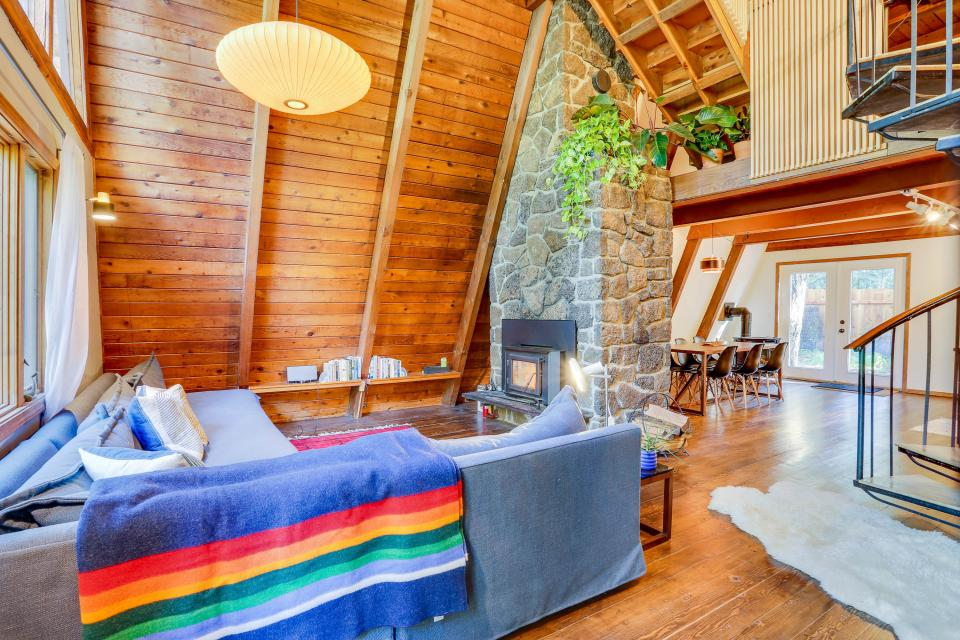
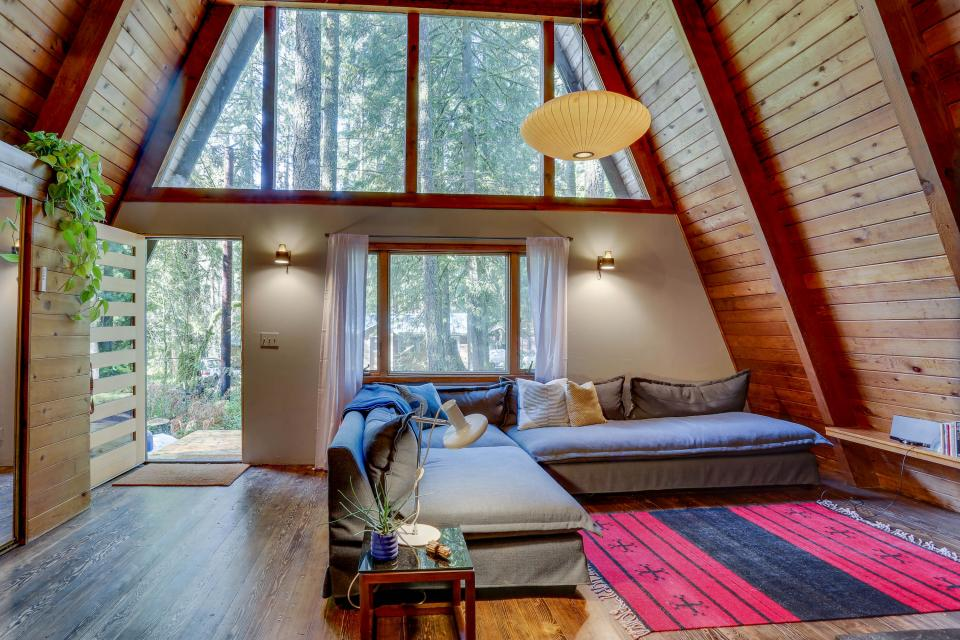
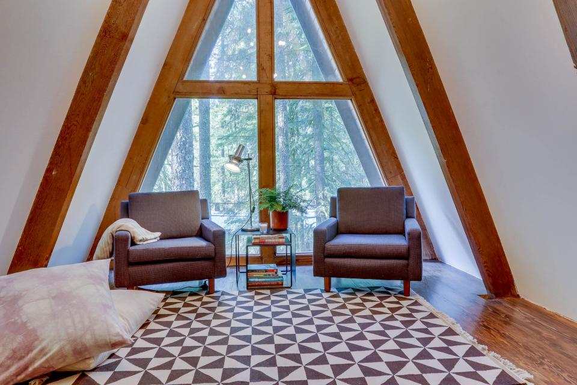
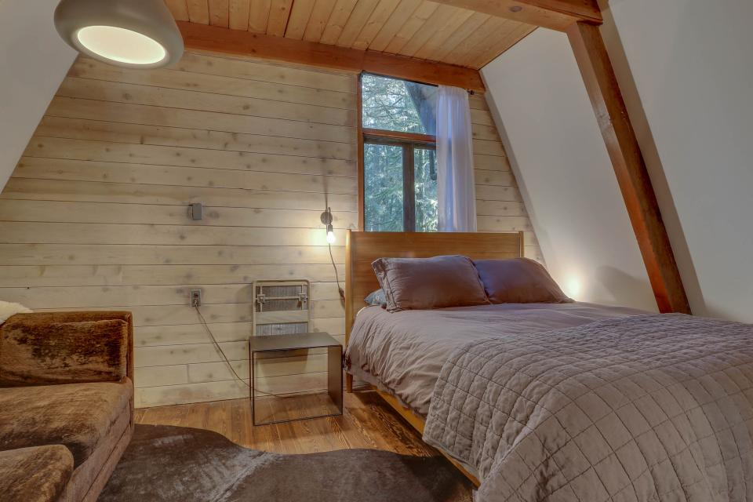
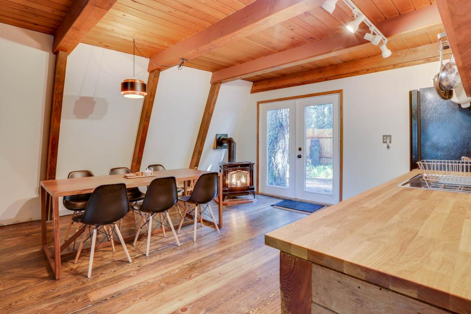
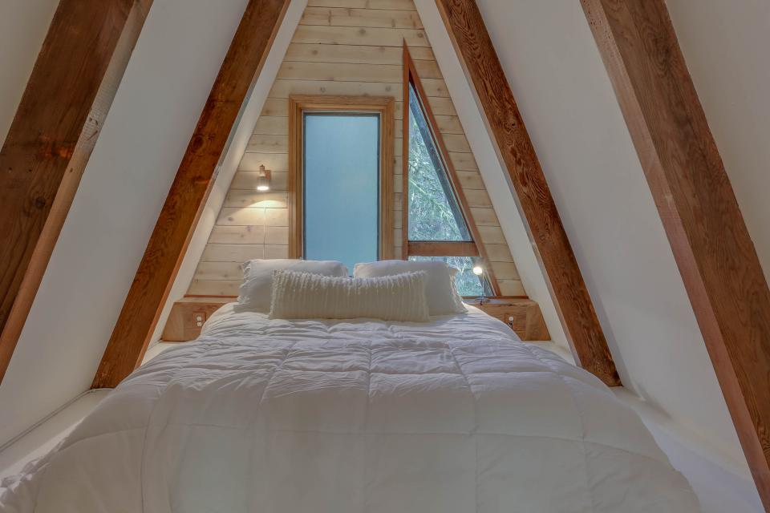

Rancho Relaxo is just an hour east of Portland in the idyllic mountain hamlet of Zig Zag, Oregon on the edge of the Mt. Hood National Forest. The cabin has been painstakingly renovated and redesigned to reflect the Pacific Northwest's contemporary aesthetic.
We’re mere minutes from world class skiing & snowboarding, hiking, mountain biking, rock climbing, fishing, and nature. There’s also a few nice pubs nearby.
- Sandy Ridge mountain biking trail
- The Timberline Trail
- The Pacific Crest Trail
- Timberline Lodge and Ski Area
- Mt. Hood Meadows
- Ski Bowl
- French's Dome
- A gazillion hikes
- The Skyway Bar & Grill
- Zig Zag River
...and many other great spots!
See more photos and book your vacation now on Vacasa.
Follow/tag us on Instagram.
Current road conditions near Rancho Relaxo:

All photos ©2016 Vacasa